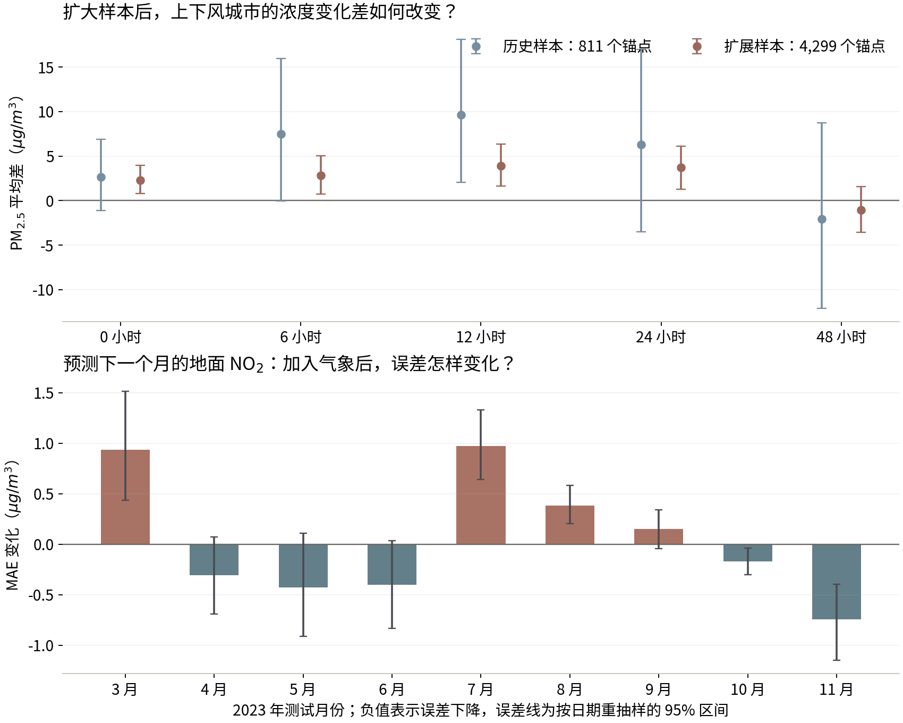

中国城市重污染日从哪里来？
2023—2025 年，在长三角 41 城的 44,115 个合格城市日中，PM₂.₅ 日均严格超过 150 µg/m³ 的有 159 个，分布在 34 个日期。三年 6 月、10 月和 11 月合计 10,898 个合格城市日，超阈值为零。这些月份用来近似麦收和秋收窗口，各地实际收获和焚烧日期有差异。另一条直接的来源线索出现在 2023 年 3 月 23 日：五个超阈值城市的地面粗颗粒在凌晨陡升，同日苏皖地区有沙尘监测记录。
空间上集中在皖北和苏北。 按皖北六市与苏北五市合计，这 11 城占全部合格城市日的 26.8%（11,837/44,115），占超阈值城市日的 61.6%（98/159）。阜阳 17 个、徐州 12 个、亳州和淮北各 11 个。南京有 1,077 个合格日，最高日均 129.16 µg/m³。地理位置提供了考察跨地区输送的线索，气团路径仍需独立核验。
全国地面小时档已覆盖全部 1,096 个日历日，其中 1,077 天至少有一城达到每日 20 个有效小时的门槛。各项多源实验按实际可匹配的城市、日期、变量计数。原项目计划书 · 三年分析输入清单
一 卫星发现火点后，下风城市的 PM₂.₅ 比上风城市多升多少？
先把火点候选格按空间和小时合并，排除固定热源。取距离 30—200 公里的城市，根据风向分组。每城先减去事件前 24 小时自己的均值，再计算下风组变化量减上风组变化量。4,299 个事件分布在 619 天，在 0、6、12、24、48 小时都能比较。五个时点的平均差依次为 +2.29、+2.82、+3.91、+3.75、−1.08 µg/m³。第 12 小时按事件日期重抽样的 95% 区间为 [1.64, 6.38]；与第 6、24 小时直接配对的差值区间均跨零。
为什么从 +9.61 变成 +3.91？ 旧 134 日样本中的 811 个事件全部出现在新表。用补齐后的地面表重算这些旧事件，均值为 +9.59；新增 3,488 个事件均值为 +2.59。把两批事件合并，均值下降约 59%。新旧估计差异主要来自纳入了更多日期和事件。+3.91 对应某一小时的组间变化差；150 是城市单日的平均浓度阈值。数值量级约为阈值的 2.6%，本研究没有据此估算跨过阈值的概率。
同一时刻，没有检出火点时会怎样？ 旧表名中的“相同锚点”指五个滞后沿用同一批火点事件，没有提供无火日对照。4,299 个锚点中 3,348 个在北京时间 12—14 时，12 小时后的观测落在夜间或凌晨。本次另做配对：在同年同月、前后 14 天内选择同一网格、同一钟点的对照。对照日及前后各一天，网格内均无现有档案的火点记录；风向差不超过 30°，风速差不超过 2 m/s，同一批城市须仍处于原上下风扇区，且都有可用浓度。多个日期合格时取最近日期，同距取风向更接近者。
1,566 个事件找到对照，来自 455 个事件日期。第 12 小时，匹配子样本中事件日平均差 +3.25，未检出日 +1.81，两者再相减为 +1.45 µg/m³。按年月整块重抽样 10,000 次，95% 区间为 [−1.98, 4.99]。比较削弱了原始关联；现有数据无法把剩余差异可靠地归因于火点。卫星未检出也可能与云或观测覆盖有关。51 个满足至少两个已绘农田小格条件的事件，主分析均值 +4.37，区间 [−0.46, 9.51]，燃烧物种类仍未知。主分析 · 逐事件配对
二 加入气象信息，卫星能否更准确地估计地面 NO₂？
卫星测量整层对流层中的 NO₂，地面站测近地面浓度，岭回归用同期配对的观测估计两者关系。一季度留出空间格点时，加入气象后平均绝对误差从 6.20 降到 5.52 µg/m³。扩展模型使用 2023 年 307 个日期、6,933 个城市日。每次只用以前月份训练，预测 3—11 月的下一个月。九次检验中，4、5、6、10、11 月误差降低，另四个月升高。气象信息改善了这次新地点检验，跨月收益随月份变化。该模型用于监测 NO₂，尚未用于估计 PM₂.₅ 来源贡献。逐月误差与区间

三 哪些城市常在同一天超阈值，能解释哪些过程？
按城市合并连续超阈值日得到 120 段过程。2023、2024、2025 年分别有 89、50、20 个超阈值城市日。2023 年 12 月 28 日、12 月 31 日和 2024 年 2 月 10 日均有 16 城同日超阈值。春节与各自节前七天相比，两年均值升高、一年下降。116 段可聚类的过程中，76 段平均风速 2.14 m/s、边界层高 246 米；其余 40 段分别为 3.41 m/s、424 米。两组上风城市前期的 PM₂.₅ 都较高（140.60、149.22 µg/m³）。聚类区分出不同扩散条件，来源贡献仍需另外检验。
1 月初，区域向外输出减弱。 9 段有完整事前三天组分资料的同城过程中，黑碳、有机碳和硫酸盐均升高，7 段在 1 月 6 日同时开始。1 月 2、5、6 日超阈值前 24 小时，包围研究区的矩形边界上黑碳、有机碳整层通量仍为净输出，输出比此前 48 小时弱。这与区域内物质较易留存相容，缺乏区域整体净输入增强的信号。直接检查气象，事件期相较前一天，9 段边界层均升高，8 段风速增大；因此不能将这些过程统一解释为近地面扩散变差。区域内部跨城输送、本地排放、化学转化可同时发生。通量对照 · 组分对照
3 月 23 日，地面站记录到一次区域沙尘影响。 五城平均粗颗粒浓度（同站 PM₁₀ 减 PM₂.₅）从 22 日 21—24 时的 21.2，升至 23 日 03—06 时的 548.7、06—09 时的 1,094.8 µg/m³，与当日区域沙尘通报吻合。MERRA-2 的模式细沙尘提供旁证：事件日全天与前三天 72 小时相比，五城增量为 +3.91 至 +7.34 µg/m³。宿迁的 +3.91 来自 6.94361 减 3.02963，约 3.91398；火点主分析的 +3.91 来自 4,299 个事件的平均差 3.90713，两者四舍五入相同。完整窗口实际有 480 个模式城市小时，其中 470 个与地面配对，事件日 120 个全部配对。地面粗颗粒和模式细沙尘粒径不同，无法将两者直接相除来分配实测 PM₂.₅。五城逐小时数据 · 区域沙尘监测通报
原始数据规模
按课程说明第 3—4 页，相关有效原始数据总量原则上至少 2 GB，每个主要来源至少 200 MB，任一来源占比原则上不超过 80%。下表使用十进制 MB，对本地落盘文件大小与 SHA-256 逐一核验。有效记录、原文件和重复派生表分别列账。
| 来源 |
同内容去重的原始文件字节 |
与分析直接相关的核验 |
| 地面站 |
1,998,769,634 |
PM₂.₅、NO₂ 原始行共 257,074,351 字节，含行键、空项和全部站列。实际进入城市均值的有效数值文本 146,138,811 字节。按两指标原始行已过 200 MB，仅计入模数值则低于 200 MB。 |
| Sentinel-5P |
40,688,405 |
含十月 L2 试验。问题二实际 330 份区域日窗共 5,252,920 字节；匹配 6,223 个不同卫星格日。整源和本题均低于 200 MB。 |
| ERA5 |
85,150,365 |
含新增边界层区域文件 12,372,984 字节。178,685 个地面匹配城市小时实际使用补值。连同既有输入仍低于 200 MB。 |
| 火点 |
558,827,644 |
七年全国年表；全国季节分布、区域事件和主分析分母不同。 |
| 地图 |
1,874,655,405 |
全国和省级快照有空间重叠，文件级去重仍不能消除地理重叠。 |
五源去重文件合计 4,558,091,453 字节，含研究区域外、未用字段与空间重叠。这个总数不能作为有效数据 2 GB 或单源占比达标证明。另有 MERRA-2 一月和三月 16 份区域组分文件共 9,313,922 字节，单列为个案材料；未并入卫星或 ERA5，未累计全球传输文件。课程规模仍有缺口。逐文件字节与哈希 · 五源小计
核验和复现
三年分析与核验说明 · 火点对照复算 · 体量复核 · 134 日阶段报告 · AI 使用与成员核验